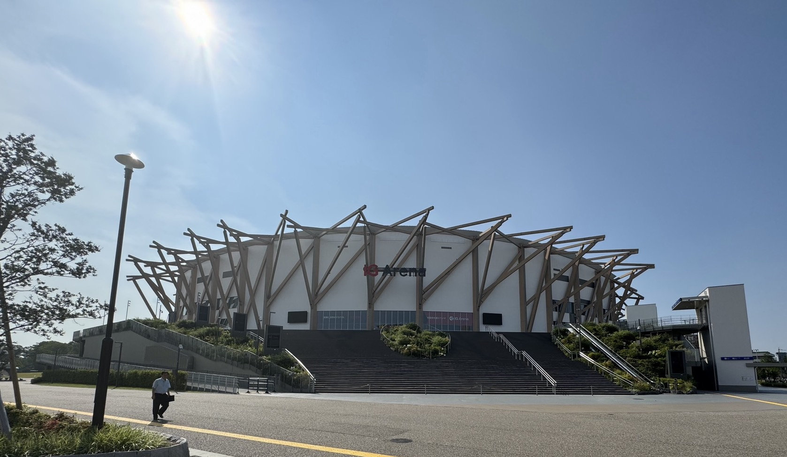
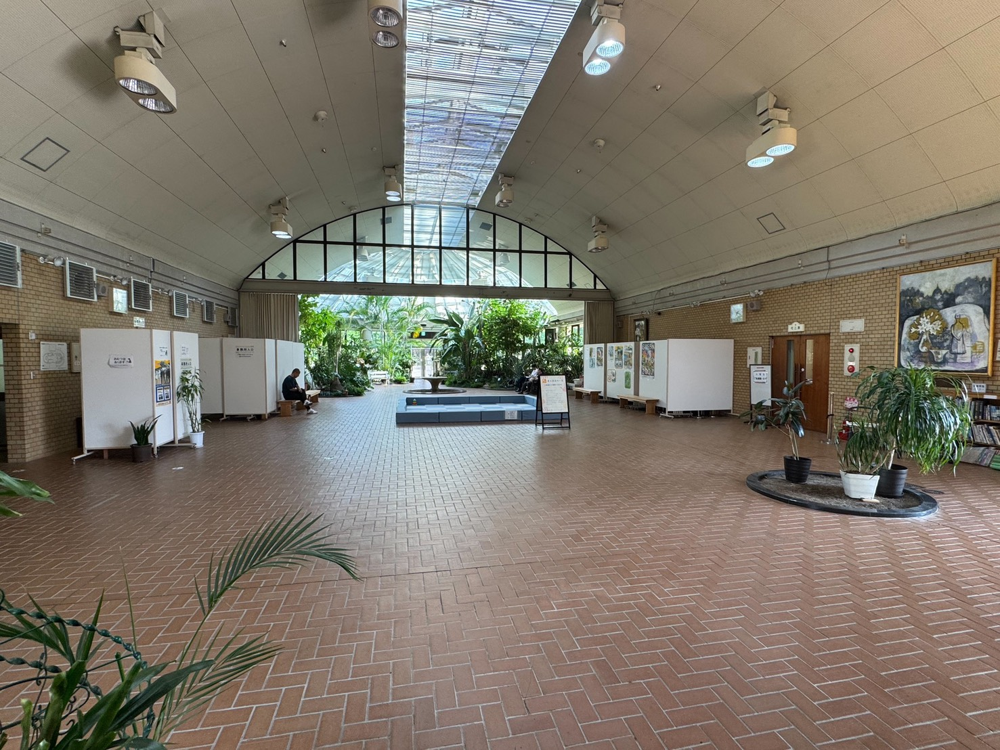
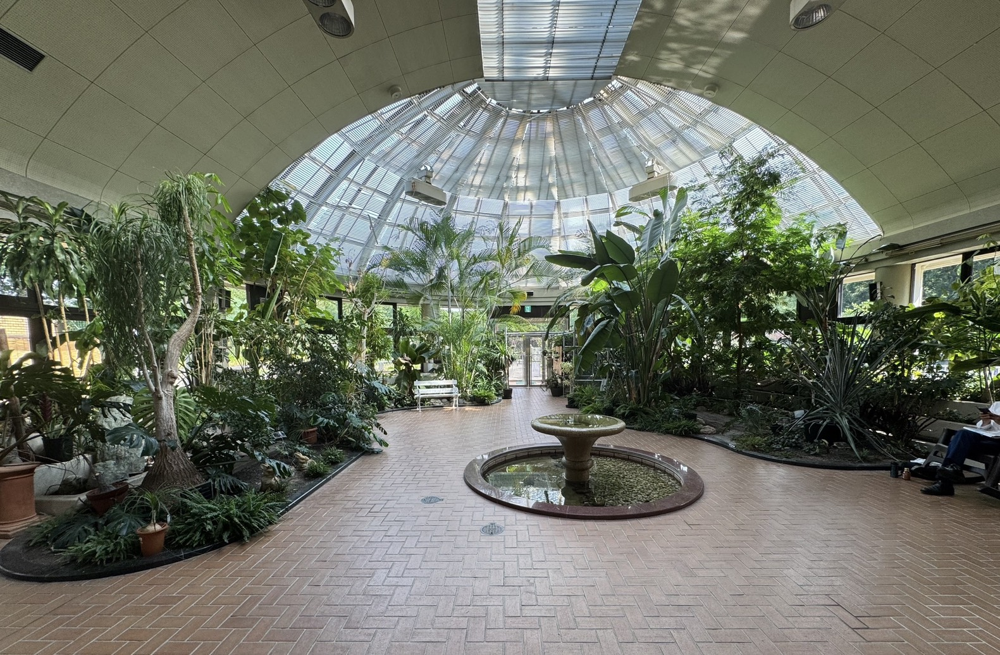
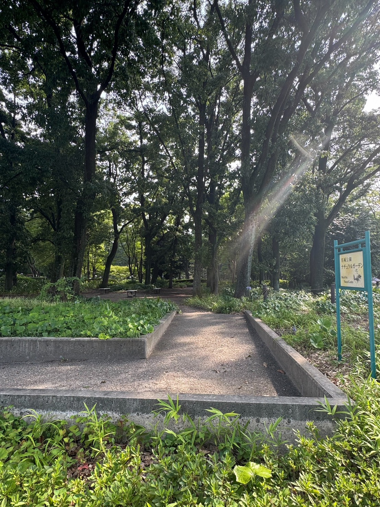
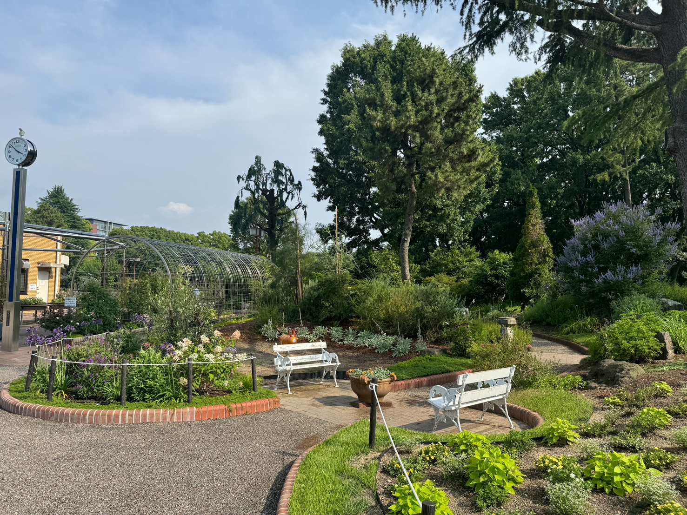

Facilities
-

- IGアリーナ
- 最大約1万7000人を収容する国内最大級の次世代型アリーナ． 最大の特徴は海外アーティストの大型ツアーにも対応できる世界基準の設備と， 最新テクノロジーを融合させたスマートなエンターテインメント空間である点にあります．
-

- アトリウム
- 自然光がたっぷりと差し込む開放的な屋内空間です． 四季折々の花や緑に囲まれながら，天候を気にせずリラックスできる 憩いのスポットとして親しまれています．
-

- サニールーム
- フラワープラザ内にある自然光をたくさん取り込んだ明るい空間で， 花や緑に関係する様々な展示会を開催しています．
-
- モデルガーデン
- 「ご家庭のガーデニングの参考になるような花壇」をコンセプトに， 四季折々の花や美しい水生植物を整備しています．
-

- ナチュラルガーデン
- 自然の林床に近い環境を目指した緑豊かなエリアです． 木漏れ日の中，四季折々の野草や樹木のナチュラルな姿を ゆったりと楽しむことができます．
-

- ハーブガーデン
- フラワープラザに隣接する英国風庭園エリアです． 色鮮やかな花々や季節のハーブが植えられており，噴水などの癒しの空間とともに 散策しながら香りや景観を楽しめるスポットです．
-
- フラワープラザ・花カフェ
- 花や緑に関する展示会や講演会の開催，園芸知識・技術の情報発信， 普及や啓発を行う施設です．施設内にはアトリウム・サニールームや花カフェがあり， 花カフェは木目調とアンティークなインテリアでまとめられたかわいらしいカフェです． モデルガーデンなどのうつくしい景色を見ながら， こだわりのコーヒーやGODIVAのアイスクリームなどを気軽に楽しむことができます．